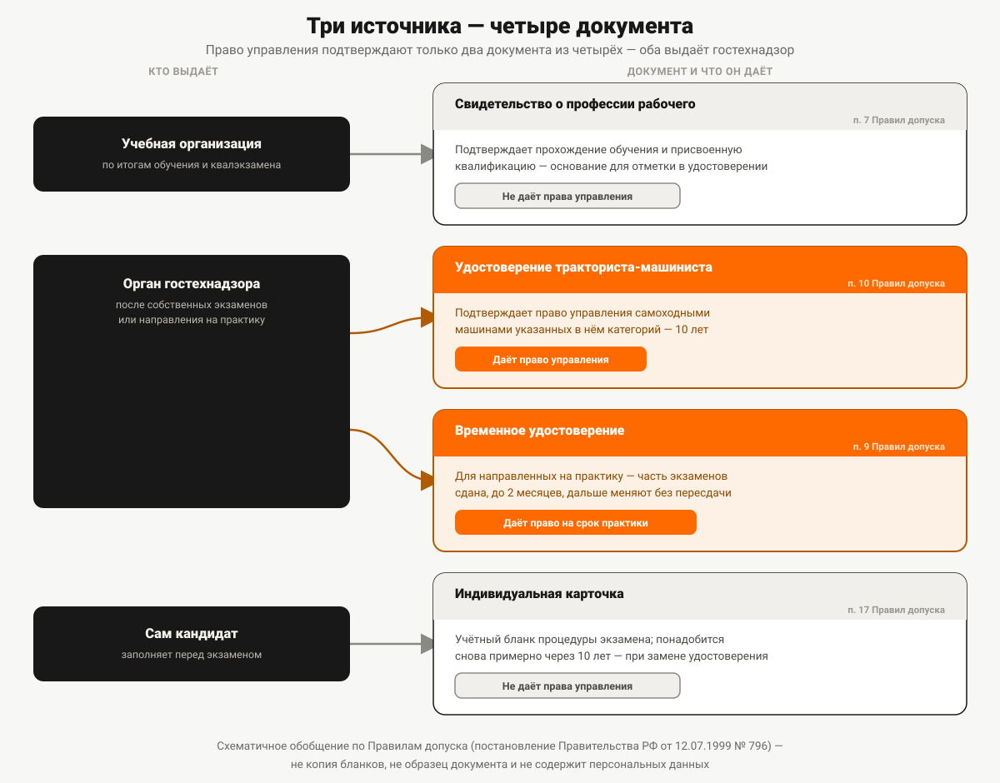

Какой документ даёт право управлять самоходной машиной
Свидетельство о профессии рабочего, удостоверение тракториста-машиниста, временное удостоверение и индивидуальная карточка: кто их выдаёт, что каждый подтверждает и какой даёт право управления.
Выпускник курсов приходит на работу с одной бумагой в руках — свидетельством об окончании обучения — и слышит от бригадира: «А права тракториста где?». Документ настоящий, обучение пройдено, но именно за руль он не пускает. Под словом «права тракториста» люди на самом деле подразумевают четыре разных документа с разными авторами, разным назначением и разным весом перед инспектором и перед работодателем.
Почему это не один документ, а четыре
Разграничение простое, если смотреть не на название бумаги, а на то, кто её выдал. Учебная организация после обучения выдаёт документ о квалификации — констатацию факта «человек прошёл программу и сдал квалификационный экзамен». А право садиться за рычаги подтверждает только орган гостехнадзора, отдельным документом, который выдаётся уже после его собственных экзаменов. Пункт 3 Правил допуска к управлению самоходными машинами и выдачи удостоверений тракториста-машиниста (тракториста), утверждённых постановлением Правительства РФ от 12.07.1999 № 796 (далее — Правила допуска), формулирует это без оговорок: право на управление подтверждается удостоверением тракториста-машиниста (тракториста) либо временным удостоверением, и управлять без одного из этих документов при себе запрещено — запрещено нормой, а не внутренним правилом конкретного предприятия.
Дальше — по каждому из четырёх документов отдельно: кто его выдаёт, что он доказывает и чего не даёт.

Документ первый. Свидетельство о профессии рабочего
Это документ, который получают по итогам профессионального обучения. Федеральный закон от 29.12.2012 № 273-ФЗ «Об образовании в Российской Федерации» относит его к документам о квалификации: лицо, успешно сдавшее квалификационный экзамен по завершении обучения, получает свидетельство о профессии рабочего, должности служащего, подтверждающее присвоение квалификации (статья 74 закона). Выдаёт его учебная организация — не ведомство, а именно тот, кто вёл обучение.
Свидетельство подтверждает факт обучения и присвоенную квалификацию, но не подтверждает право управления самоходной машиной — это и есть ключевая граница, из-за которой возникает путаница из начала статьи. Пункт 7 Правил допуска говорит об этом документе ровно в одной роли: он служит основанием для внесения в удостоверение тракториста-машиниста отметки о квалификации — работает как приложение к уже полученному удостоверению, а не как замена ему.
Отдельно стоит развести похожие по звучанию термины. У самой учебной организации есть свой документ — свидетельство о соответствии требованиям оборудования и оснащённости образовательного процесса. Это разрешение организации на подготовку трактористов, а не документ слушателя, и без него выпускников к экзамену не допустят. Почему это условие не формальность — в статье «Удостоверение тракториста в обход обучения».
Есть ли у свидетельства о профессии рабочего срок действия — вопрос, на который стоит ответить осторожно. В статьях 73–74 закона № 273-ФЗ, которые описывают квалификационный экзамен и порядок выдачи этого документа, прямого указания на срок действия нет. Формулировка «действует бессрочно», которую иногда используют учебные организации, в тексте закона не встречается — но нет там и обратного, ограничения по времени. Точнее говорить не «документ бессрочный по закону», а «закон не устанавливает для него срока действия»: разница тонкая, но именно вторая формулировка подтверждена нормой напрямую.
Документ второй. Удостоверение тракториста-машиниста
Это и есть тот самый документ, который подтверждает право управления. Выдаёт его орган гостехнадзора — и только после того, как кандидат сдал у него экзамены на право управления самоходными машинами (пункт 10 Правил допуска). Учебная организация в этой цепочке не участвует: она готовит к экзамену и выдаёт своё свидетельство, а принимает экзамен и оформляет удостоверение уже ведомство.
Записи в удостоверении делаются печатающим устройством. По желанию заявителя, в дополнение к бумажному документу, при наличии технической возможности может быть оформлено ещё и удостоверение в виде электронного документа — подписанное усиленной квалифицированной электронной подписью и направленное в личный кабинет заявителя (пункт 10 Правил допуска). Электронная форма — это дополнение к бумажной, а не её замена, и появляется она только по желанию заявителя; утверждение, что удостоверение теперь бывает «только электронным», нормой не подтверждается.
Документ третий. Временное удостоверение
Этот документ рассчитан на узкую ситуацию — производственную практику. Пункт 9 Правил допуска описывает его так: орган гостехнадзора выдаёт временное удостоверение тем, кого учебная организация направила на практику сроком до двух месяцев, — после того как кандидат сдал часть экзаменов (без итогового комплексного этапа) и оплатил пошлину за временное удостоверение. Когда практика завершена и на руках уже есть свидетельство о профессии рабочего, временное удостоверение меняется тем же органом на полноценное удостоверение тракториста-машиниста — без пересдачи экзаменов.
Норма не описывает других поводов для выдачи временного удостоверения, кроме производственной практики учащихся. Утверждать, что его выдают в каких-то ещё случаях, значит домыслить то, чего в тексте Правил допуска нет.
Документ четвёртый. Индивидуальная карточка
Карточку заполняет сам кандидат перед сдачей экзаменов, если раньше она не выдавалась (пункт 17 Правил допуска), и передаёт экзаменатору вместе с паспортом. По сути это не документ, подтверждающий право управления, а внутренний учётный бланк, сопровождающий кандидата через процедуру.
Своя роль у карточки появляется много позже — при замене удостоверения: пункт 37 Правил допуска требует представить «индивидуальную карточку или другой документ, подтверждающий выдачу удостоверения». А поскольку само удостоверение выдаётся на 10 лет (пункт 34), получается практическая связка: карточка понадобится снова примерно через десять лет, при плановой замене. Это вывод из двух разных пунктов Правил допуска, а не отдельная норма о сроке хранения, — но выбрасывать карточку сразу после получения удостоверения всё равно не стоит.
Случай, когда не нужен ни один из четырёх документов
Правила допуска отдельно оговаривают ситуацию, в которой удостоверение вообще не требуется. Пункт 8: «Отсутствие удостоверения тракториста-машиниста (тракториста) не лишает права на выполнение работ, не связанных с управлением самоходными машинами, но предусмотренных квалификациями трактористов, трактористов-машинистов и машинистов самоходных машин». Формулировка узкая, расширять её не стоит: речь о работах, а не об управлении. По своей квалификации человек может, например, обслуживать или ремонтировать технику, не садясь за рычаги, — и для этого удостоверение не нужно. Но как только дело доходит до управления, действует общее правило пункта 3: без удостоверения или временного удостоверения — нельзя.
Четыре документа рядом
| Документ | Кто выдаёт | Что подтверждает | Срок действия | Когда предъявляют |
|---|---|---|---|---|
| Свидетельство о профессии рабочего | Учебная организация, по итогам обучения и квалификационного экзамена | Прохождение обучения и присвоенную квалификацию | Норма срок не устанавливает | При подаче на экзамен в гостехнадзор — по желанию заявителя; работодателю — по требованию |
| Удостоверение тракториста-машиниста (тракториста) | Орган гостехнадзора, после сдачи экзаменов | Право управления самоходными машинами указанных категорий | 10 лет | Инспектору при управлении машиной; при трудоустройстве |
| Временное удостоверение | Орган гостехнадзора, для направленных на практику | Право управления на срок практики (до 2 месяцев) | До окончания практики, затем меняется на постоянное | Инспектору на период практики |
| Индивидуальная карточка | Заполняется самим кандидатом перед экзаменом | Факт участия в процедуре сдачи экзамена | Норма отдельный срок не устанавливает; практически нужна к моменту замены удостоверения | Экзаменатору перед экзаменом; в органе гостехнадзора — при замене удостоверения |
Что спросит инспектор, а что — работодатель
У инспектора на дороге или на площадке вопрос один: есть ли при себе документ, подтверждающий право управления, — удостоверение тракториста-машиниста или временное удостоверение. Свидетельство о профессии рабочего и индивидуальная карточка для этого разговора значения не имеют: они не подтверждают право управления.
У работодателя логика шире: ему может понадобиться не только удостоверение, но и свидетельство о профессии рабочего — если работа завязана на конкретную квалификацию, а не только на умение вести машину. Удостоверение отвечает на вопрос «можно ли этому человеку управлять машиной», свидетельство — «какую квалификацию он получил». Как квалификации попадают в удостоверение отдельными отметками — в статье «Квалификации в особых отметках удостоверения».
Полный список того, что кандидат приносит в гостехнадзор для сдачи экзаменов, — в статье «Документы для получения прав тракториста». Если документ выдан не в России или много лет назад, правила другие — они разобраны в статье «Обмен иностранного удостоверения тракториста». Свидетельство о профессии рабочего по тракторным программам выдаёт учебная организация, которая вела обучение, — заявленные категории тракторного направления «Авто-Класса» перечислены на странице направления.